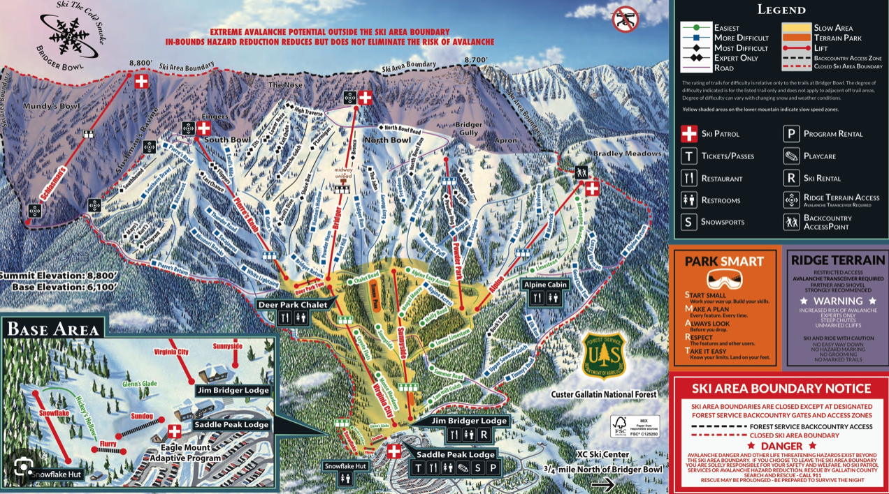

Bridger Bowl is an alpine ski area in the western United States, near Bozeman, Montana. It serves the local population of Gallatin County, including Montana State University. The summit elevation is 8,700 feet above sea level, with a vertical drop of 2,600 feet on east-facing slopes.